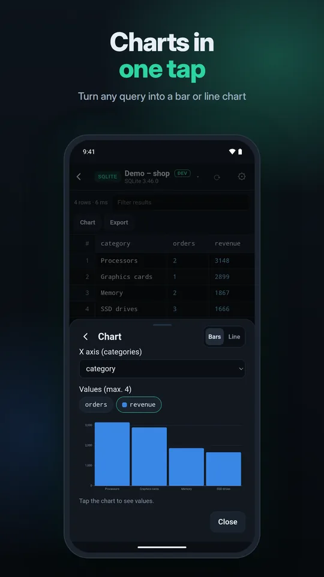

Snowflake client for Android
Check a dashboard number, rerun a failed query or look at a table in Snowflake – right from your phone, with every login method your company uses.
Works with: Any Snowflake account (org-account identifier or account locator).

How to connect to Snowflake from Android
- Tap + New → Snowflake and enter your account identifier, e.g.
myorg-myaccount. - Choose the login method: password, password + MFA (Duo push or passcode), browser SSO, programmatic access token, OAuth or RSA key pair.
- Set warehouse, role, database and schema – the same context you use in Snowsight.
- Connect and run SQL; turn results into a bar or line chart with one tap.
What you can do
Every login method
Password, MFA, external browser SSO, PAT, OAuth token and key pair.
Warehouse & role
Pick the context per connection.
Charts
Bar and line charts from any query result.
Export
Send results as CSV or JSON from the phone.
Read-only mode
Protect production accounts from accidental changes.
Desktop layout
Use DeX or a tablet for a full three-pane SQL IDE.
Private and safe by design
TivaroSQL Studio connects directly from your phone to Snowflake – there is no proxy server and no account. Passwords and keys are encrypted with Android Keystore, the app has no ads, analytics or tracking, and you can lock it or a single connection with your fingerprint.
Frequently asked questions
Does SSO work on Android?
Yes. External browser SSO opens your identity provider (Okta, Entra ID and others) in the browser to sign you in.
Can I use key-pair authentication?
Yes. Paste the private key (optionally encrypted with a passphrase).
Where are my credentials stored?
Encrypted on the device with Android Keystore.